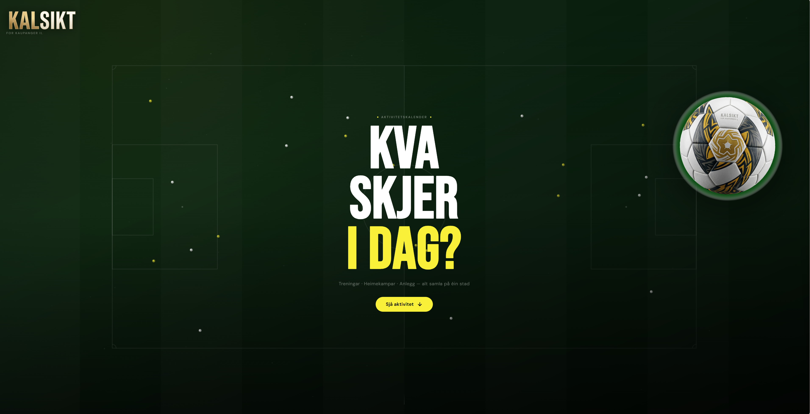
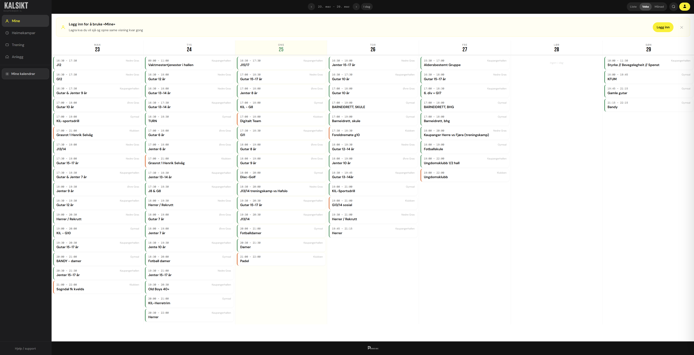
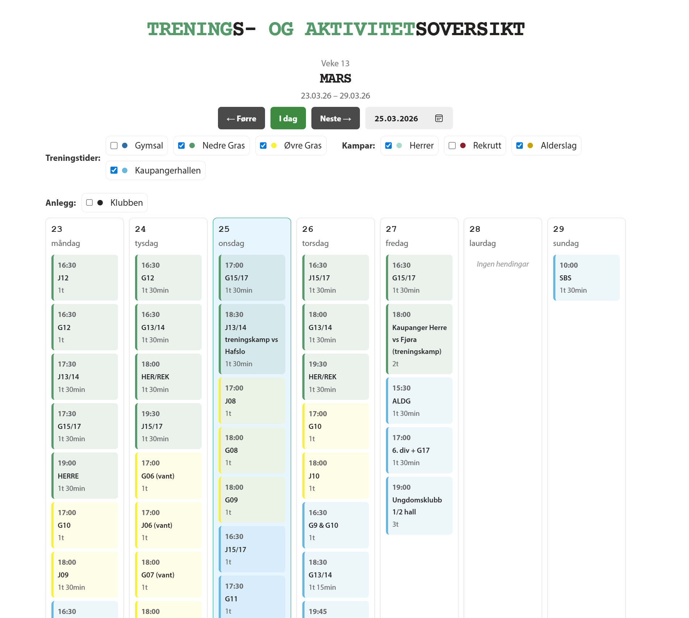
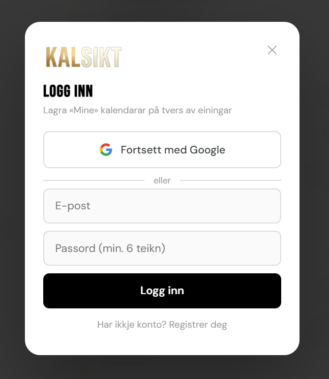

KalSikt
Fullstendig aktivitetskalender-webapplikasjon for Kaupanger IL — veke-, månad- og listevisning, brukarkontoar med Google OAuth og ein innebygd widget brukt direkte på klubbsida. Hendingar henta frå Google Calendar API.
Treningar · Heimekampar · Anlegg — alt samla på éin stad
Sjå aktivitet ↓KalSikt er ein eigenbygd aktivitetskalender for Kaupanger IL. Koordinatorar i klubben legg inn hendingar direkte i Google Calendar — det eksisterande verktøyet dei allereie brukar — og KalSikt henter data gjennom API-et og presenterer det i eit strukturert, offentleg grensesnitt. Ingen separat CMS, ingen ekstra pålogging for administratorar.
Appen tilbyr veke-, månad-, dag- og listevisning. Innloggja brukarar kan lagre ein personleg «Mine»-kalender — ei filtrert vising av berre laga og anlegga dei bryr seg om — som vert bevart på tvers av einingar. Pålogging via Google OAuth eller e-post/passord.
KalSikt kjem òg som innebygd widget — fullstendig vekeprogram, fargekoda etter anlegg, med datonavigasjon og live-filtrering — lagt direkte inn på klubbens eksisterande nettstad med eit enkelt kode-snipp. Attribusjon: «Utvikla av Parkside1 AS».
Nøkkelfunksjonar

Landingsside — mørk grøn hero med fotballbane-grafikk
App — vekevising med anleggssidepanel
Innebygd widget — vekentleg aktivitetsoversikt for eksterne nettsider
Innlogging — Google OAuth-modal for personleg Mine-kalender